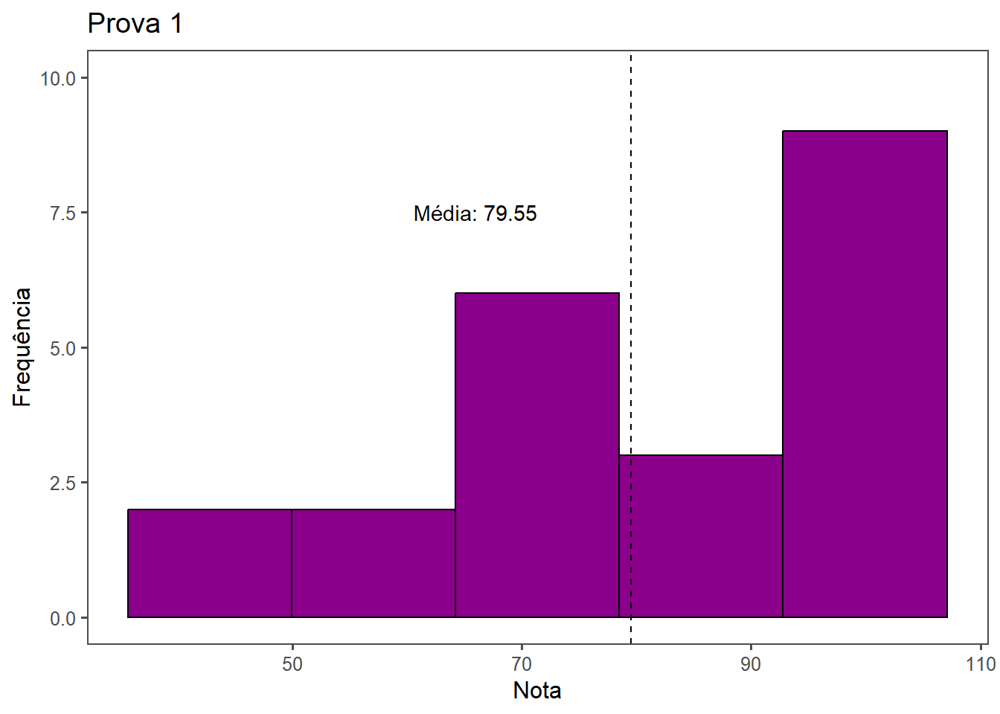
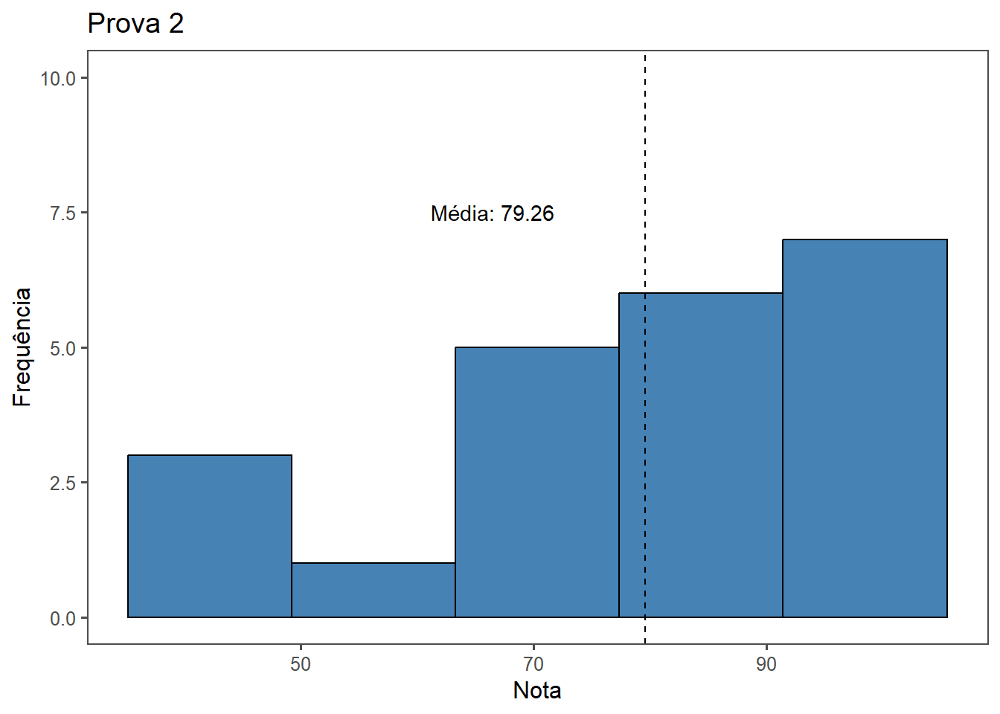
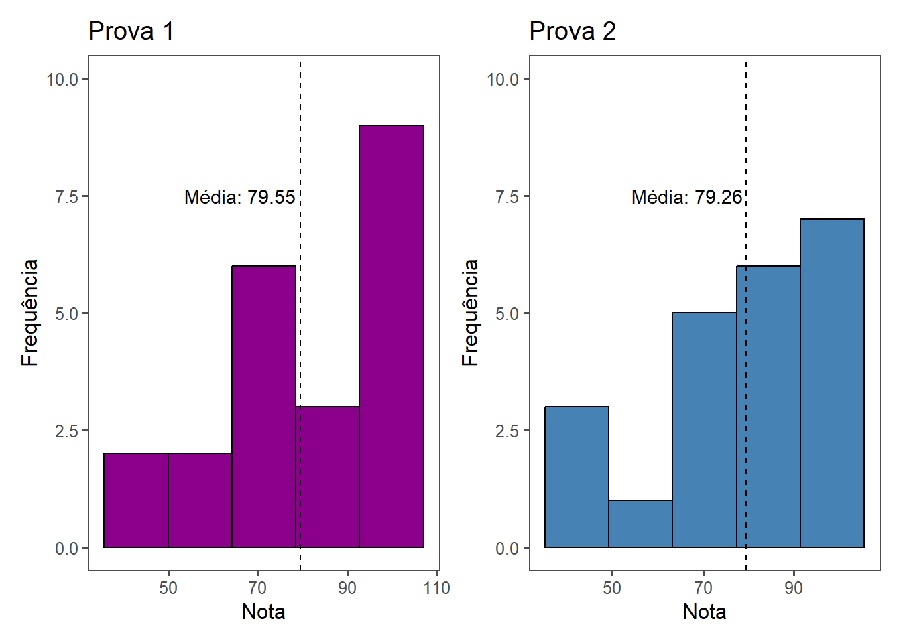
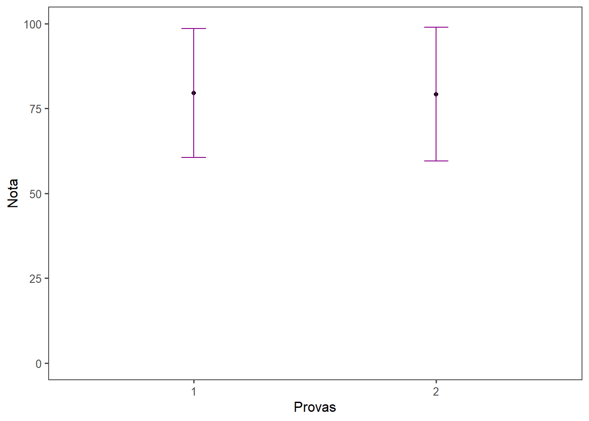
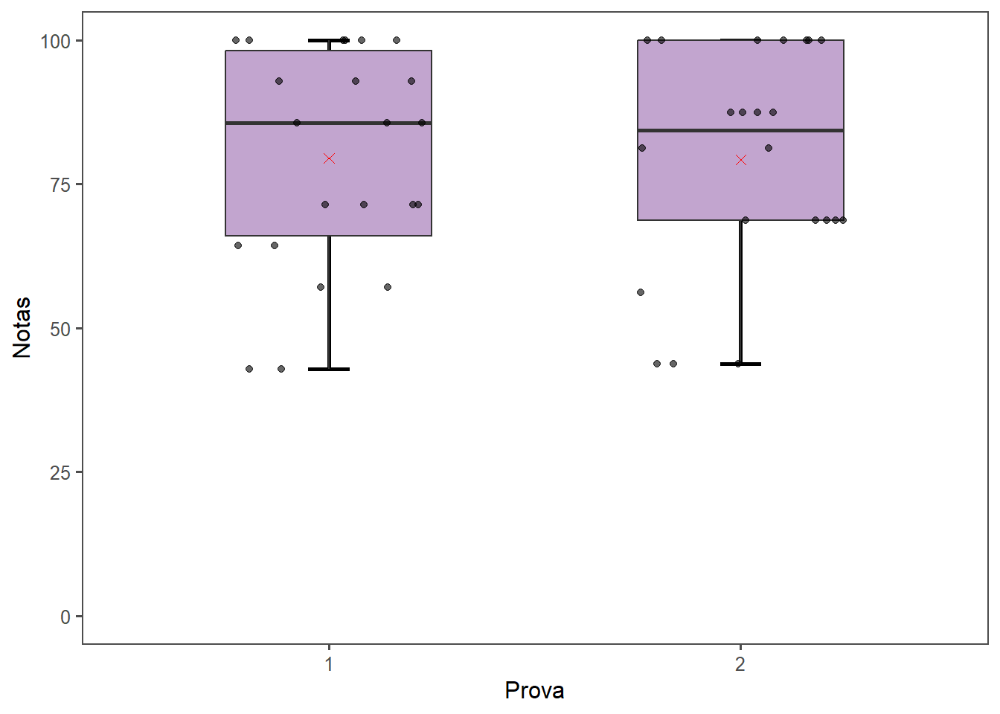

library(gsheet)
library(tidyverse)
library(ggthemes)
library(dplyr)
library(patchwork)Pacotes
Importa o arquivo da planilha online
notas <- gsheet2tbl("https://docs.google.com/spreadsheets/d/1bq2N19DcZdtax2fQW9OHSGMR0X2__Z9T/edit#gid=1092065531")Separação das notas da prova 1 e prova 2
notas1 <- notas %>%
select(prova, nota) %>%
filter(prova == "1")
notas1# A tibble: 22 × 2
prova nota
<dbl> <dbl>
1 1 71.4
2 1 92.9
3 1 85.7
4 1 42.9
5 1 100
6 1 85.7
7 1 100
8 1 57.1
9 1 100
10 1 71.4
# ℹ 12 more rowsnotas2 <- notas %>%
select(prova, nota) %>%
filter(prova == "2")
notas2# A tibble: 22 × 2
prova nota
<dbl> <dbl>
1 2 81.2
2 2 68.8
3 2 87.5
4 2 87.5
5 2 87.5
6 2 100
7 2 100
8 2 100
9 2 100
10 2 43.8
# ℹ 12 more rowsCalculo das médias das provas 1 e 2
media1 <- mean(notas1$nota)
media2 <- mean(notas2$nota)Gráfico de Histograma
Quando comparamos as notas da prova 1 em relação prova 2, a maioria dos alunos obtiveram notas superiores a 90 na prova 1. Porém a média das duas provas, de maneira geral, foram iguais.
#Gerei um gráfico das notas da prova 1
plot1 <- notas1 %>%
ggplot(aes(x = nota)) +
geom_histogram(bins = 5, fill = "darkmagenta", color = "black") +
labs(y = "Frequência",
x = "Nota", title = "Prova 1") +
geom_vline(xintercept = media1 , color = "black", linetype = "dashed") +
annotate(geom = "text",
x= 66,
y = 7.5,
label = "Média: 79.55") + ylim(0,10) +
theme_few()
plot1
#Gerei um gráfico das notas da prova 2
plot2 <- notas2 %>%
ggplot(aes(x = nota)) +
geom_histogram(bins = 5, fill = "steelblue", color = "black") +
labs(y = "Frequência",
x = "Nota", title = "Prova 2") +
geom_vline(xintercept = media1 , color = "black", linetype = "dashed") +
annotate(geom = "text",
x= 66.5,
y = 7.5,
label = "Média: 79.26") + ylim(0,10) +
theme_few()
plot2
#Carreguei o pacote "library(patchwork)" e através do "|" coloquei os dois gráficos lado a lado.
(plot1|plot2)
Obs: Para inserir a linha verical de interceptação da média:
geom_vline(xintercept = media1 , color = “black”, linetype = “dashed”) + annotate(geom = “text”, x= 75, y = 7.5, label = “Média”)
Gráfico de Barra de erro
Através do gráfico de barra de erro foi possível observar que não houve diferença entre as médias das provas 1 e 2.
notas_resumo <- notas %>%
group_by(prova) %>%
summarise(media = mean(nota), sd = sd(nota))
notas_resumo %>%
ggplot(aes(x = as.factor(prova), y = media)) +
geom_point() +
geom_errorbar(aes(ymin = media - sd, ymax = media + sd), width = 0.1, color = "darkmagenta") +
theme_few() + ylim(0,100)+
labs( x = "Provas",
y = "Nota")
Gráfico Boxplot:
notas %>%
ggplot(aes(x = as.factor(prova),
y = nota)) +
geom_errorbar(stat = "boxplot", width = 0.1, size = 1) + #o limite da barra de erros que segue o padrão do boxplot
geom_boxplot(width = 0.5, fill = "#C2A5CF") + #width- mexe na largura da caixa
geom_point(stat = "summary", fun = "mean", shape = 4, size = 2, color = "red") + #a média é representada por um "X", onde eu utlizei o resumo do meus dados, utilizando a função média.
labs (x = "Prova",
y = "Notas")+
geom_jitter(alpha = 0.6, height = 0, width = 0.25, color = "black", size = 1.5) + #alpha - transparencia dos meus pontos
theme_few() + ylim(0,100)